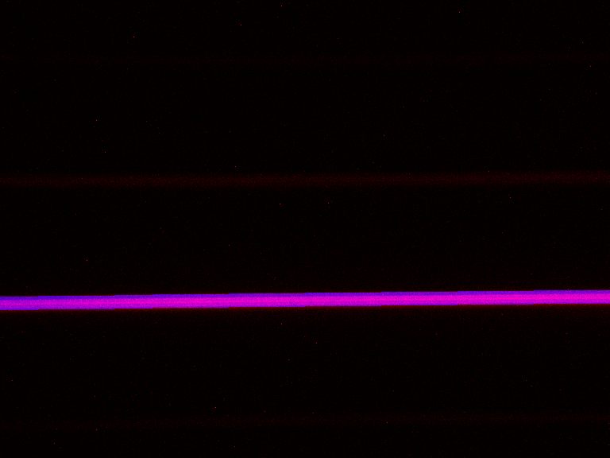
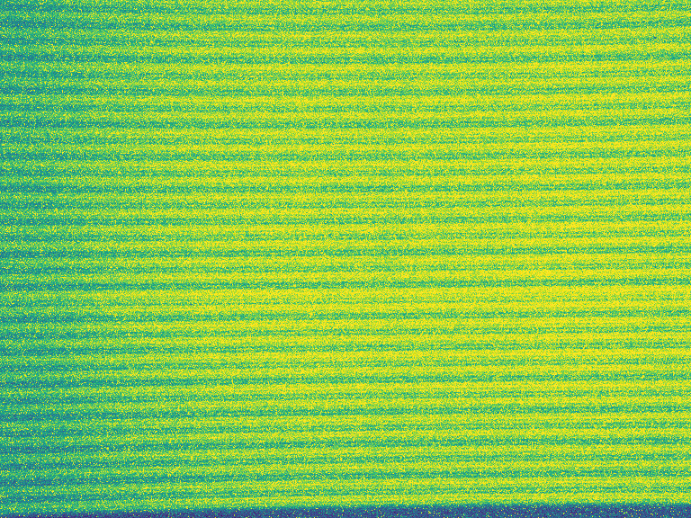
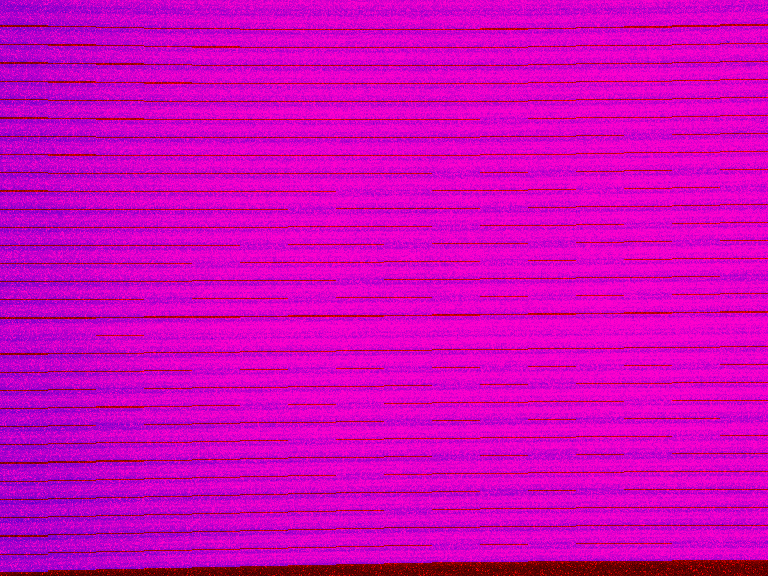
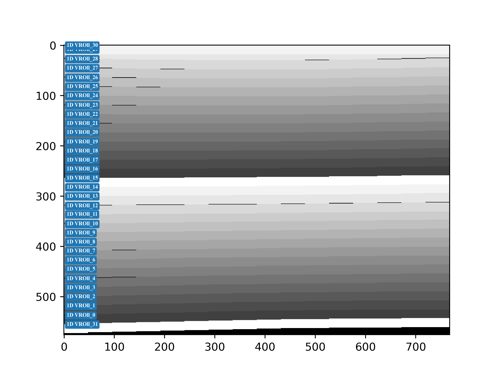

fd_path: PCM灰度图.raw格式文件路径，数据获取方式&修改，请查看pcm灰度图数据获取file_path: 生成的数据存储路径roi_name: 生成的ROI文件名提供一些通用方法
提供ROI生成相关方法
标定配置文件
标定程序主文件，主要包含标定功能，ROI Data生成
def get_pcm_file(fp: str) -> dict: ...
file_dict = get_pcm_file(cfg['fd_path'])
"""{key: value}, key为文件索引，value为文件路径"""
f_dict = { 0:"./roll0.raw",
1:"./roll1.raw",
2:"./roll2.raw"
}
# 标定顺序根据 key 进行排序标定，可正序 或 倒序
roll_num = (v_roll_num + 1) if scan_mode == 0 else (h_roll_num + 1) * (v_roll_num + 1)
if len(file_dict) != roll_num:
raise ValueError("...")
Conv2()实现了3*3卷积，去除PCM灰度图噪点，提高ROI标定正确率(可选)seg_sum_array（按段累和后再标定，可以极大降部噪点导致标定误差的概率）seg_sum_array按列找到最大值v_spad_value & 最大位置索引v_spad_max_index（最大值视作光最强，索引视作段光条中心点）【1*16的矩阵】H_VLD_SEG配置对v_spad_value进行开窗，在16段中获取光条最亮的段v_spad_max_index进行开窗，获取每段光条的位置（开窗大小为18，固定开启18行spad）576*48*(H_VLD_SEG+1) 进行累和，获得 576*16 矩阵seg_sum_array（累和后标定，可以极大降低局部噪点导致标定误差的概率）seg_sum_array按列找到最大值v_spad_value & 最大位置索引v_spad_max_index（最大值视作光最强，索引视作应段光条中心点）【1*16的矩阵】v_spad_value最大值所在索引，获取光条开启的段v_spad_max_index进行开窗，通过比较光子数，获取光条开启的段v_spad_max_index进行开窗，获取光条开启的位置（开窗大小为18，固定开启18行spad）{0}为rolling计数，{1}为文件的key


